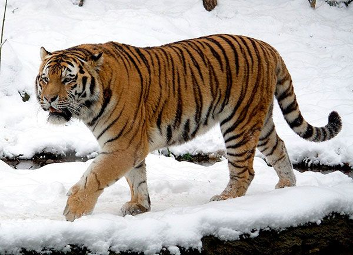

Tigre-siberiano
O tigre-siberiano vive nessa região da Rússia ameaçado pela caça ilegal, já que sua pele é usada para confeccionar casacos, bolsas e almofadas. Foram registrados, em 2014, apenas 250 exemplares desses tigres vivendo em liberdade. A extinção desses animais é um alerta para nós tomarmos consciência da ação humana sobre eles, seus habitats e sobre nossos hábitos de consumo. Aqui no Brasil, infelizmente, a nossa maior e mais recente tragédia ambiental colocou em risco várias espécies de animais com a contaminação do Rio Doce.
Nome científico: Panthera tigris altaica
Estado de Conservação: Em perigo (Estável)
Nível Trófico: Carnívoro
Classificação: Subespécie
Classificação superior: Tigre

Situação atual
Até o começo do século XX os tigres-siberianos viviam espalhados pela Manchúria (região nordeste da China), sudeste da Sibéria, Coreia e nordeste da Mongólia. Em 1905 foram encontrados tigres na região do rio Aldan, a 60 graus de latitude de norte, mesma latitude de cidades como São Petersburgo, Oslo, Uppsala e Estocolmo. Também foram vistos tigres cruzando no inverno o estreito da Tartária, chegando até a ilha Sacalina. Porém tal situação começou a mudar na primeira década do século XX, quando passou a ser brutalmente caçado em meio a construção das ferrovias Transiberiana e Transmanchuriana, e nos anos 1920 foram extintos da Coreia do Sul. Como resultado seus números foram reduzidos a não mais do que 30 indivíduos na época da Segunda Guerra Mundial. Em 1947 passaram a ser protegidos por lei pelo governo soviético e os tigres recuperaram parte de seu número original. Tigres siberianos do zoo parque de Harbin, na China. No dia 25 de dezembro de 1991 a União Soviética, após uma longa crise política, deixou de existir, e a fiscalização das fronteiras ficou muito enfraquecida. Como resultado muitos caçadores vindos de países vizinhos tais como China, Coreia do Sul e Japão atravessaram as fronteiras e os números dos tigres foram reduzidos para 200 em 1994. Porém com o esforços conservacionistas e de patrulhas anti-caça, seus números subiram para entre 300 a 400 em 2004.[15] Atualmente se encontram restritos à região dos montes Sikhote Alin, no sudeste da Sibéria, perto das fronteiras com a China e a Coreia do Norte. Segundo um estudo, realizado pela Sociedade para a Conservação da Vida Selvagem (WCS), os tigres siberianos, os maiores do mundo, podem desaparecer. A pesquisa mostra que a população restante da espécie diminuiu consideravelmente nos últimos quatro anos. Em 2005, cerca de 500 indivíduos habitavam as 16 áreas monitoradas por uma programa. Hoje, apenas 56 animais estão confirmados nesses mesmos lugares.[16] As grandes ameaças que pairam para com os tigres-siberianos hoje em dia são o comércio de órgãos na medicina chinesa e a destruição de seu habitat. A Sibéria concentra grandes áreas de florestas e isso é um grande atrativo para empresas madeireiras.